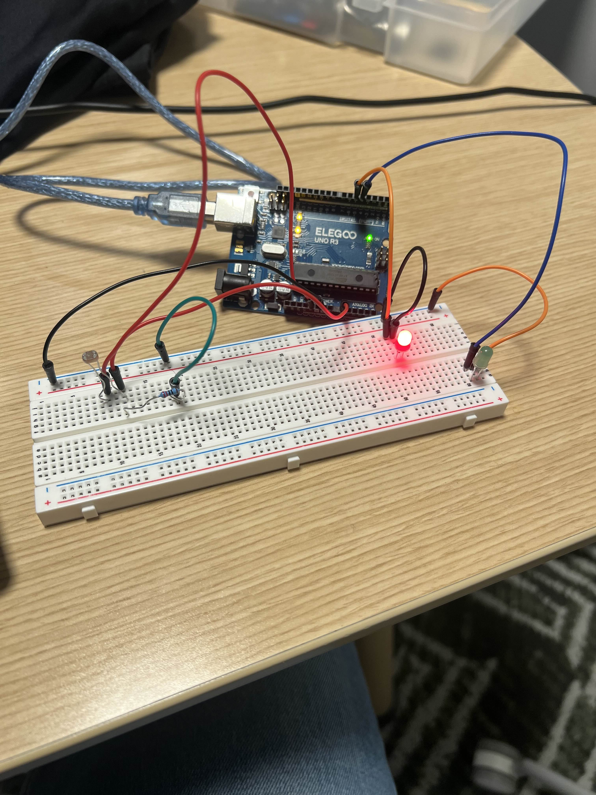

Varun Hariharan
I built a circuit that reads a photoresistor (LDR) through a voltage divider and changes the state of
two LEDs. When it’s bright, the green LED turns on; when it’s dark, the red LED turns on. The code uses
analogRead(), map(), constrain(), analogWrite(), an
if-statement, and prints to the Serial Monitor. I justify resistor choices and the divider math below.
My breadboard build:
Simplified diagram matching my wiring:
The photoresistor (LDR) changes resistance with light. Paired with a fixed 10 kΩ resistor, it forms a voltage divider whose output goes to A0. The node voltage is Vout = Vin · Rbottom / (Rtop + Rbottom). With Vin=5 V:
I used 10 kΩ to produce a wide, readable span on A0 with a typical LDR (≈1 kΩ bright to >50 kΩ dark). Each LED has a 220 Ω series resistor: ≈(5 V − 2 V)/220 Ω ≈ 13–14 mA, safe for the pin.
Final code used on my board (bright → green on D3, dark → red on D5):
/*
HCDE 439 – Assignment 3
Student: Varun Hariharan
LDR divider on A0 drives two LEDs: bright → GREEN (D3) on, dark → RED (D5) on.
Uses analogRead(), map(), constrain(), analogWrite(), if-statement, and Serial.
*/
int sensorValue = 0; // last sensor reading (0–1023)
int outputValue = 0; // mapped PWM value (0–255)
const int GREEN_PIN = 3; // ~3 supports analogWrite
const int RED_PIN = 5; // ~5 supports analogWrite
void setup() {
Serial.begin(9600); // serial for debugging/screenshot
pinMode(GREEN_PIN, OUTPUT); // set LED pins as outputs
pinMode(RED_PIN, OUTPUT);
}
void loop() {
sensorValue = analogRead(A0); // read divider node
outputValue = map(sensorValue, 50, 100, 0, 255); // rough map; can be calibrated
outputValue = constrain(outputValue, 0, 255); // clamp to valid PWM
if (outputValue > 100) { // treat as "bright"
analogWrite(GREEN_PIN, 255); // green on, red off
analogWrite(RED_PIN, 0);
} else { // "dark"
analogWrite(GREEN_PIN, 0); // red on, green off
analogWrite(RED_PIN, 255);
}
Serial.print("LED Output Value = ");
Serial.println(outputValue);
delay(5); // small pause for readability
}Calibration tip: after noting your A0 values in dark/bright, replace
map(sensorValue, 50, 100, 0, 255) with
map(sensorValue, <darkRaw>, <brightRaw>, 0, 255) for a perfect threshold.
Short demo of the LEDs switching as the light changes:
Yes. Putting the LDR on the top (to +5 V) or bottom (to GND) works; it just flips the polarity of Vout. Example with 10 kΩ fixed:
I will hand-draw a plot with x = time and y = divider voltage at A0, showing steps as I cover/uncover the LDR.
Today I map 10-bit ADC (0–1023) to 8-bit PWM (0–255). If PWM were 10-bit and ADC 16-bit, the scaling would be:
// hypothetical 16-bit ADC to 10-bit PWM
uint16_t raw16 = /* 0..65535 */;
uint16_t pwm10 = map(raw16, 0, 65535, 0, 1023); // then analogWrite10bit(pwm10);
If I still had 8-bit PWM, I’d map to 0–255 instead.
I verified the divider with Serial, adjusted a threshold that made sense for my room lighting, and used two LEDs so the output wasn’t a single LED. The trickiest part was getting the rails and rows right on the breadboard; once fixed, the readings and switching were consistent.